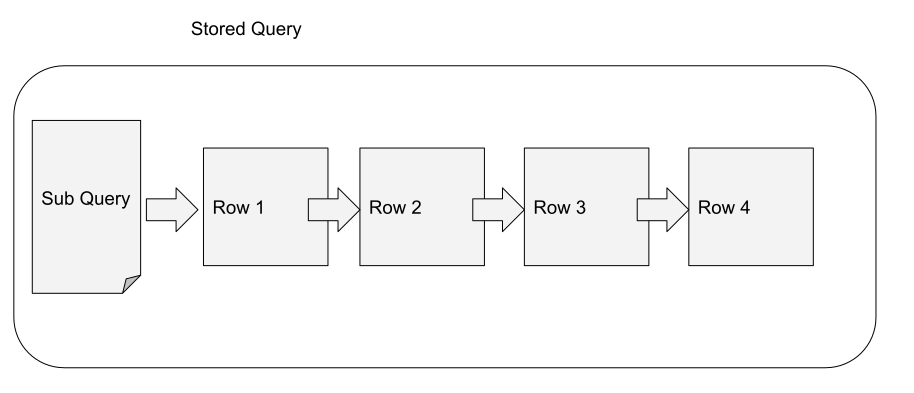

Alerting on event patterns
We have shown in earlier posts how Velociraptor uses VQL to define event queries that can detect specific conditions. These conditions can be used to create alerts and escalation actions.
We have shown in earlier posts how Velociraptor uses VQL to define event queries that can detect specific conditions. These conditions can be used to create alerts and escalation actions.
One of the most useful types of alerts is detecting a pattern of activity. For example we can detect failed and successful login attempts seperately, but it is the specific pattern of events (say 5 failed login attempts followed by a successful one) that is interesting from a detection point of view.
This post illustrates how this kind of temporal correlation can be expressed in a VQL query. We then use it to create alerts for attack patterns commonly seen by intrusions.
Event Queries
Velociraptor executes queries written in the Velociraptor Query Language (VQL). The queries can be executed on the client, and their results streamed to the server. Alternatively the queries may be executed on the server and process the result of other queries which collected information from the client.
A VQL query does not have to terminate at all. VQL queries draw their data from a VQL plugin which may simply return data rows at different times. For example, consider the following query:
SELECT EventData as FailedEventData,
System as FailedSystem
FROM watch_evtx(filename=securityLogFile)
WHERE System.EventID = 4625
This query sets up a watcher on a windows event log file. As new events are written to the log file, the query will produce those events as new rows. The rows will then be filtered so we only see event id 4625 (Failed logon event).
Velociraptor can implement event queries on the client or on the server. For example, say we wanted to collect all failed event logs with the query above. We would write an artifact that encapsulates this query:
name: Windows.System.FailedLoginAttempts
parameters:
- name: securityLogFile
default: C:/Windows/System32/Winevt/Logs/Security.evtx
sources:
- queries:
- SELECT EventData as FailedEventData,
System as FailedSystem
FROM watch_evtx(filename=securityLogFile)
WHERE System.EventID.Value = 4625
Then we simply add that artifact to the monitored artifact list in the config file:
Events:
artifacts:
- Generic.Client.Stats
- Windows.System.FailedLoginAttempts
version: 2
ops_per_second: 10
The monitored artifacts are run on all clients connected to the server. The output from these queries is streamed to the server and stored in the client's monitoring VFS directory.
Lets test this artifact by trying to run a command using the runas windows command. We will be prompted for a password but failing to give the correct password will result in a login failure event:

After a few seconds the event will be written to the windows event log and the watch_evtx() VQL plugin will emit the row - which will be streamed to the VFS monitoring directory on the server, where it can be viewed in the GUI:
The above screenshot shows that the monitoring directory now contains a subdirectory named after the artifact we created. Inside this directory are CSV files for each day and every failed logon attempt is detailed there.
Time correlation
While it is interesting to see all failed logon attempts in many cases these events are just noise. If you put any server on the internet (e.g. an RDP or SSH server) you will experience thousands of brute force attempts to break in. This is just the nature of the internet. If your password policy is strong enough it should not be a big problem.
However, what if someone guesses the password for one of your accounts? Then the activity pattern is more like a bunch of failed logons followed by a successful logon for the same account.
This pattern is way more interesting than just watching for a series of failed logons (although that is also good to know).
But how do we write a query to detect this? Essentially the query needs to look back in time to see how many failed logon attempts preceeded each successful logon.
This is a typical problem which may be generalized as followed:
::: {.admonition} Goal
We want to detect an event A preceeded by a specified number of events B within a defined time window. :::
This problem may be generalized for example:
- Detect a user account created and deleted within a short time window.
- A beacon to a specific DNS followed by at least 5 beacons within the last 5 hours to same DNS (Event A and B are the same).
The fifo() plugin
How shall we write the VQL query to achieve this? This is made possible by use of the fifo() plugin. As its name suggests, the FIFO plugin acts as a First In First Out cache for event queries.

The plugin is given a subquery which is also a VQL query generating its own events. As the subquery generates events, each event is kept in the fifo plugin's cache in a first in first out manner. Events are also expired if they are too old.
We typically store the query in a variable. Each time the variable is queried the cache is returned at once. To illustrate how this works consider the following query:
LET fifo_events = SELECT * FROM fifo(
max_rows=5,
query={
SELECT * from watch_evtx(filename=securityLogFile)
WHERE System.EventID.Value = 4625
})
SELECT * FROM foreach(
row={
SELECT * FROM clock(period=60)
},
query={
SELECT * from fifo_events
})
The first query is stored into the fifo_events variable. When it is first defined, the fifo() VQL plugin launches its subquery and simply collects its output into its local cache in a fifo manner. This will essentially keep the last 5 rows in its cache.
The second query runs the clock() plugin to receive a clock event every 60 seconds. For each of these events, we select from the fifo_events variable - that is we select the last 5 failed events.
You can see that this allows us to query the last 5 events in the fifo cache for every clock event. If we now replace the clock event with a successful logon event this query will do exactly what we want:
# This query will generate failed logon events - one per row, as
# they occur.
- LET failed_logon = SELECT EventData as FailedEventData,
System as FailedSystem
FROM watch_evtx(filename=securityLogFile)
WHERE System.EventID.Value = 4625
# This query will create a fifo() to contain the last 5 failed
# logon events.
- LET last_5_events = SELECT FailedEventData, FailedSystem
FROM fifo(query=failed_logon,
max_rows=5,
max_age=atoi(string=failedLogonTimeWindow))
# This query simply generates successful logon events.
- LET success_logon = SELECT EventData as SuccessEventData,
System as SuccessSystem
FROM watch_evtx(filename=securityLogFile)
WHERE System.EventID.Value = 4624
# For each successful event, we select the last 5 failed events
# and count them (using the group by). If the count is greater
# than 3 then we emit the row as an event.
- SELECT * FROM foreach(
row=success_logon,
query={
SELECT SuccessSystem.TimeCreated.SystemTime AS LogonTime,
SuccessSystem, SuccessEventData, FailedEventData,
FailedSystem, count(items=SuccessSystem) as Count
FROM last_5_events
WHERE FailedEventData.SubjectUserName = SuccessEventData.SubjectUserName
GROUP BY LogonTime
}) WHERE Count > 3
The above query simply watches the event log for failed logins and populates a fifo() with the last 5 failed events. At the same time we monitor the event log for successful logon events. If we see a successful event, we go back and check the last 5 failed events and count them.
If the failed events are for the same user and there are more than 3 then we report this as an event. We now have a high value event.
Let's see what it looks like when such an event is triggered:

Just like before, the events are written to a daily CSV log, one event per CSV row. It is a bit hard to see in the GUI since there is a lot of data, (We probably need some GUI work to improve this) but there is a single row emitted for each event, and the FailedEventData column contains a list of all the failed login attempts stored in the fifo().
Server side queries.
We have seen how the fifo() plugin can be used in the monitoring artifact itself to have the client detect its own events. However, the endpoint is usually only able to see its own events in isolation. It would be nice to be able to detect patterns only evident by seeing concerted behaviour from multiple endpoints at the same time.
For example, consider the pattern of an attacker who compromised domain credentials running multiple PowerShell Remoting commands across the entire domain. A command like:
PS C:\WINDOWS\system32> Invoke-Command –ComputerName testcomputer -ScriptBlock {Hostname}
TestComputer
This command will generate multiple event log entries, including event 4624 (logon) on each host. While in isolation, on each individual endpoint this event is not suspicious, we might consider seeing this event repeated within a short time across the domain suspicious.
To set that up we would run the following artifact as a monitoring artifact on all endpoints:
name: Windows.Event.SuccessfulLogon
sources:
- queries:
- SELECT EventData as SuccessEventData,
System as SuccessSystem
FROM watch_evtx(filename=securityLogFile)
WHERE System.EventID.Value = 4624
On the server we simple install a watcher on all monitoring events from this artifact and feed the result to the fifo(). This fills the fifo() with the last 500 successful logon events from all clients within the last 60 seconds:
LET last_successful_logons = SELECT * FROM fifo(
max_rows=500,
max_time=60,
query={
SELECT * FROM watch_monitoring(
artifact="Windows.Event.SuccessfulLogon")
})
By counting the number of such unique events we can determine if there were too many successful logon events from different hosts within the last minute. This might indicate a scripted use of powershell remoting across the domain.
Conclusions
In this post we have seen how to write artifacts which capture a time ordered pattern of behavior. This technique is useful to codify common attack techniques. The technique is general and we can use the same idea on server side queries to correlate events from many hosts at the same time.